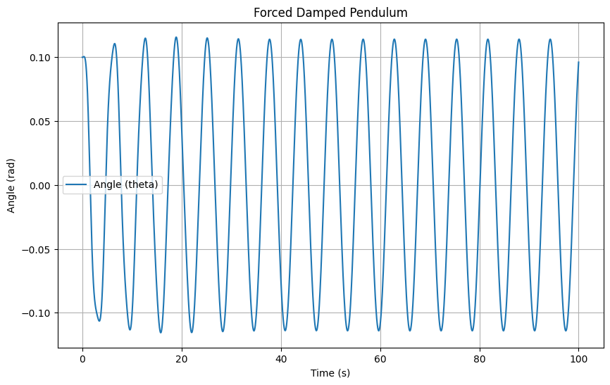
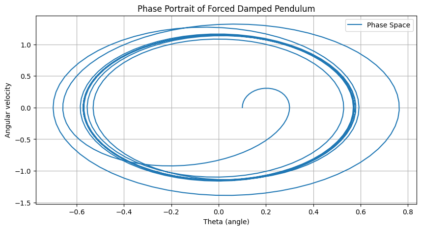
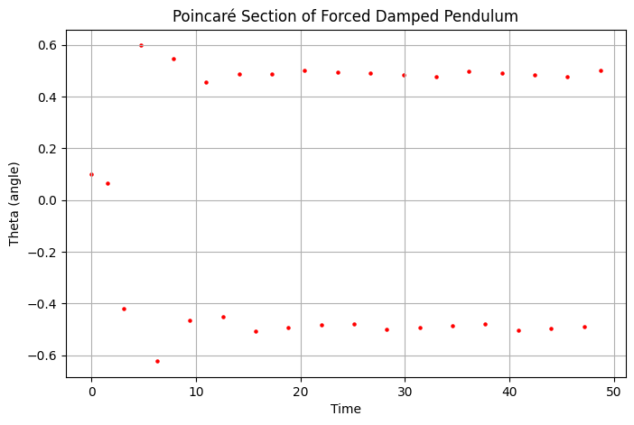
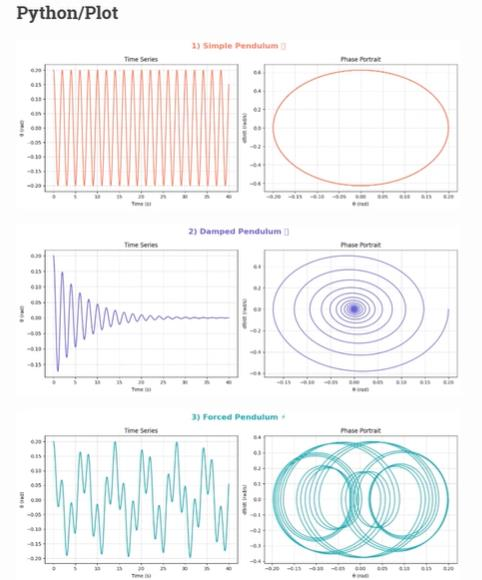

Problem 2
Investigating the Dynamics of a Forced Damped Pendulum
Motivation
The forced damped pendulum is an ideal system to study how damping, restoring forces, and external periodic forces interact. This system exhibits a rich variety of behaviors such as resonance, chaos, and periodic motion. These phenomena have widespread applications in fields like energy harvesting, mechanical structures under stress, and oscillating systems. By analyzing how external forces and damping affect the motion, we can gain insights into real-world systems like suspension bridges and oscillating circuits.
1. Theoretical Foundation
Differential Equation for Forced Damped Pendulum
The motion of a forced damped pendulum is described by the following differential equation:
Where: - \( \theta \) is the angular displacement, - \( \gamma \) is the damping coefficient, - \( g \) is the gravitational acceleration, - \( L \) is the length of the pendulum, - \( F_0 \) is the amplitude of the external driving force, - \( \omega \) is the frequency of the external force.
For small-angle approximations (\( \theta \) small), we can simplify \( \sin \theta \approx \theta \), yielding:
This is a second-order linear non-homogeneous ODE.
Solution for Small-Angle Oscillations
For small oscillations, the solution to this equation involves: - The homogeneous solution for damping and natural frequency, and - A particular solution for the external driving force.
The general solution combines both, with resonance occurring when \( \omega \approx \omega_0 \), where \( \omega_0 = \sqrt{\frac{g}{L}} \).
Resonance Conditions and Energy Implications
At resonance (\( \omega = \omega_0 \)), the system absorbs energy efficiently from the external force, leading to large oscillations. Damping reduces the amplitude of oscillations at resonance, preventing them from growing indefinitely.
2. Analysis of Dynamics
Influence of Damping, Driving Amplitude, and Frequency
- Damping Coefficient (\( \gamma \)): As \( \gamma \) increases, the amplitude of oscillations decreases, and the system may move to a critically damped or overdamped state.
- Driving Amplitude (\( F_0 \)): Increasing the driving amplitude increases the oscillation amplitude, especially near resonance.
- Driving Frequency (\( \omega \)): The frequency of the external force affects the system’s oscillations. Resonance occurs when \( \omega \) is close to \( \omega_0 \), causing large oscillations.
4. Implementation
Computational Model
Below is a Python script to simulate the motion of the forced damped pendulum:
import numpy as np
import matplotlib.pyplot as plt
from scipy.integrate import solve_ivp
# Constants
g = 9.81 # acceleration due to gravity (m/s^2)
L = 1.0 # length of pendulum (m)
gamma = 0.1 # damping coefficient
F0 = 1.0 # amplitude of driving force
omega = 1.0 # driving frequency
theta_0 = 0.1 # initial angle (radians)
omega_0 = np.sqrt(g / L) # natural frequency
# Define the system of equations
def pendulum(t, y):
theta, omega_dot = y
dydt = [omega_dot, -(2 * gamma * omega_dot + (g / L) * np.sin(theta)) + (F0 / L) * np.cos(omega * t)]
return dydt
# Time span and initial conditions
t_span = (0, 100)
y0 = [theta_0, 0]
t_eval = np.linspace(*t_span, 10000)
# Solve the system
sol = solve_ivp(pendulum, t_span, y0, t_eval=t_eval)
# Plot the results
plt.figure(figsize=(10, 6))
plt.plot(sol.t, sol.y[0], label='Angle (theta)')
plt.title('Forced Damped Pendulum')
plt.xlabel('Time (s)')
plt.ylabel('Angle (rad)')
plt.legend()
plt.grid(True)
plt.show()

4.1 Effect of Parameters
- Damping (\( \gamma \)): Higher damping suppresses oscillations.
- Driving Amplitude (\( A \)): Large \( A \) can lead to chaotic behavior.
- Driving Frequency (\( \omega \)): When \( \omega \approx \omega_0 \), resonance occurs, leading to large oscillations.
4.2 Transition to Chaos
By varying \( A \) and \( \omega \), the pendulum can exhibit periodic, quasiperiodic, or chaotic motion.Phase space plots and Poincaré sections illustrate these behaviors.
import numpy as np
import matplotlib.pyplot as plt
from scipy.integrate import odeint
def pendulum_equations(y, t, gamma, omega0, A, omega):
theta, v = y
dydt = [v, -gamma * v - omega0**2 * np.sin(theta) + A * np.cos(omega * t)]
return dydt
# Parameters
gamma = 0.5 # Damping coefficient
omega0 = 1.5 # Natural frequency
A = 1.2 # Driving force amplitude
omega = 2.0 # Driving frequency
# Initial conditions
y0 = [0.1, 0] # Initial angle and velocity
t = np.linspace(0, 50, 1000) # Time array
# Solve ODE
y = odeint(pendulum_equations, y0, t, args=(gamma, omega0, A, omega))
# Plot results
plt.figure(figsize=(10, 5))
plt.plot(y[:, 0], y[:, 1], label='Phase Space')
plt.xlabel('Theta (angle)')
plt.ylabel('Angular velocity')
plt.title('Phase Portrait of Forced Damped Pendulum')
plt.legend()
plt.grid()
plt.show()

Poincare System
import numpy as np
import matplotlib.pyplot as plt
from scipy.integrate import odeint
def pendulum_equations(y, t, gamma, omega0, A, omega):
theta, v = y
dydt = [v, -gamma * v - omega0**2 * np.sin(theta) + A * np.cos(omega * t)]
return dydt
# Parameters
gamma = 0.5 # Damping coefficient
omega0 = 1.5 # Natural frequency
A = 1.2 # Driving force amplitude
omega = 2.0 # Driving frequency
# Initial conditions
y0 = [0.1, 0] # Initial angle and velocity
t = np.linspace(0, 50, 1000) # Time array
# Solve ODE
y = odeint(pendulum_equations, y0, t, args=(gamma, omega0, A, omega))
# Plot results
poincare_times = np.arange(0, 50, np.pi / omega) # Stroboscopic points
theta_poincare = y[np.searchsorted(t, poincare_times), 0]
plt.figure(figsize=(8, 5))
plt.scatter(poincare_times, theta_poincare, s=5, color='red')
plt.xlabel('Time')
plt.ylabel('Theta (angle)')
plt.title('Poincaré Section of Forced Damped Pendulum')
plt.grid()
plt.show()


5. Practical Applications
- Energy Harvesting: Utilizing resonance for efficient energy transfer.
- Suspension Bridges: Preventing dangerous oscillations.
- Electrical Circuits: Analogous behavior in driven RLC circuits.
6. Conclusion
The forced damped pendulum is a rich system for studying nonlinear dynamics. Through numerical simulations, we can observe diverse behaviors, from simple oscillations to chaos, providing insight into both fundamental physics and engineering applications.